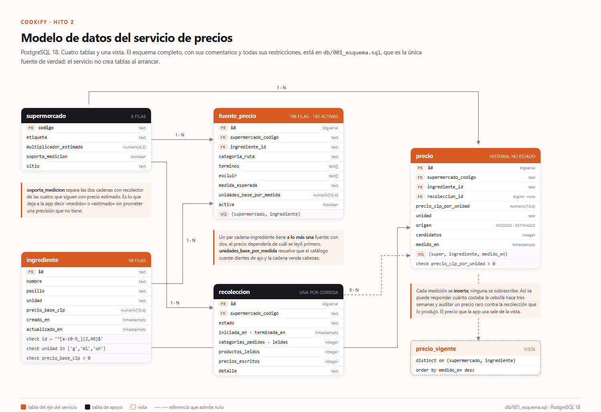

<meta charset="utf-8">
<title>Cookify · Documento técnico del back end · Hito 2</title>
<link rel="stylesheet" href="https://fonts.googleapis.com/css2?family=Bricolage+Grotesque:opsz,wght@12..96,600;12..96,700;12..96,800&family=Archivo:ital,wght@0,400;0,500;0,600;0,700;1,400&display=swap">
<style>
/*
 * Documento tecnico del Hito 2. Se imprime con:
 *   msedge --headless=new --print-to-pdf=tecnico-cookify.pdf --no-pdf-header-footer
 *
 * El CSS es el mismo del documento del Hito 1 y se arma desde ahi con
 * tools/ (ver armar_tecnico.py): dos copias a mano se separan en la primera
 * edicion. Los numeros de pagina del indice estan escritos a mano y
 * verificados contra el PDF generado.
 */
@page { size: letter; margin: 0; }

:root {
  --papel:   #FDFCFB;
  --tinta:   #17161A;
  --media:   #4E4952;
  --suave:   #877F8C;
  --linea:   #E6E0E6;
  --ambar:   #D75A20;
  --ambar-suave: #FDF2EC;
  --oscuro:  #0B0B0E;
  --display: "Bricolage Grotesque", "Segoe UI", system-ui, sans-serif;
  --cuerpo:  "Archivo", "Segoe UI", system-ui, sans-serif;
}

* { box-sizing: border-box; margin: 0; padding: 0;
    -webkit-print-color-adjust: exact; print-color-adjust: exact; }

html { background: #55505a; }
body { font-family: var(--cuerpo); color: var(--tinta); font-size: 9.4pt; line-height: 1.45; }

/* Cada .hoja es una pagina carta exacta. */
.hoja {
  width: 8.5in; height: 11in; background: var(--papel);
  margin: 0 auto; padding: 0.92in 0.95in 0.8in;
  position: relative; overflow: hidden;
  page-break-after: always; break-after: page;
}
.hoja:last-child { page-break-after: auto; break-after: auto; }
@media screen { .hoja { margin-bottom: 18px; box-shadow: 0 8px 26px rgba(0,0,0,.4); } }

/* ---- encabezado y pie corridos ---- */
.corrido {
  position: absolute; top: 0.5in; left: 0.95in; right: 0.95in;
  display: flex; justify-content: space-between; align-items: center;
  font-size: 8pt; color: var(--suave); letter-spacing: .3px;
  padding-bottom: 5px; border-bottom: 1px solid var(--linea);
}
.corrido .m { font-family: var(--display); font-weight: 700; color: var(--tinta); letter-spacing: -.2px; }
.corrido .m i { color: var(--ambar); font-style: normal; }
.folio {
  position: absolute; bottom: 0.52in; left: 0.95in; right: 0.95in;
  display: flex; justify-content: space-between;
  font-size: 8pt; color: var(--suave);
  padding-top: 5px; border-top: 1px solid var(--linea);
}

/* ---- tipografia ---- */
h1 { font-family: var(--display); font-size: 25pt; font-weight: 700; letter-spacing: -.7px;
     line-height: 1.12; margin-bottom: 4pt; text-wrap: balance; }
h2 { font-family: var(--display); font-size: 13.5pt; font-weight: 700; letter-spacing: -.3px;
     margin: 13pt 0 5pt; }
h3 { font-family: var(--display); font-size: 11.5pt; font-weight: 600; margin: 13pt 0 4pt; }
.seccion { font-family: var(--display); font-size: 8.5pt; font-weight: 700; letter-spacing: 2px;
           text-transform: uppercase; color: var(--ambar); margin-bottom: 9pt; }
.bajada { font-size: 12pt; color: var(--media); line-height: 1.5; margin-bottom: 15pt; max-width: 46em; }
p { margin-bottom: 7pt; }
p + h2, ul + h2, table + h2, figure + h2, .caja + h2 { margin-top: 17pt; }
strong { font-weight: 600; }
em { font-style: italic; }
a { color: var(--ambar); text-decoration: none; }

ul, ol { margin: 0 0 8pt 1.1em; }
li { margin-bottom: 4pt; }
ul.limpia { list-style: none; margin-left: 0; }
ul.limpia li { padding-left: 1em; text-indent: -1em; }
ul.limpia li::before { content: "— "; color: var(--ambar); }

/* ---- piezas ---- */
.cifras { display: flex; gap: 12pt; margin: 12pt 0; }
.cifra { flex: 1; background: var(--ambar-suave); border-radius: 8px; padding: 10pt 11pt; }
.cifra .n { font-family: var(--display); font-size: 19pt; font-weight: 700; color: var(--ambar);
            line-height: 1; letter-spacing: -.5px; }
.cifra .t { font-size: 8.4pt; color: var(--media); margin-top: 4pt; line-height: 1.35; }

table { width: 100%; border-collapse: collapse; margin: 8pt 0; font-size: 8.8pt; }
th { text-align: left; font-weight: 600; font-size: 7.6pt; text-transform: uppercase;
     letter-spacing: .7px; color: var(--suave); padding: 5pt 7pt 5pt 0;
     border-bottom: 1.5px solid var(--tinta); }
td { padding: 4pt 6pt 4pt 0; border-bottom: 1px solid var(--linea); vertical-align: top; }
td.num, th.num { text-align: right; font-variant-numeric: tabular-nums; padding-right: 0; }
tr.destaca td { background: var(--ambar-suave); font-weight: 600; }

.caja { border-left: 3px solid var(--ambar); background: var(--ambar-suave);
        padding: 7pt 11pt; margin: 9pt 0; border-radius: 0 7px 7px 0; }
.caja p:last-child { margin-bottom: 0; }
.caja .rotulo { font-family: var(--display); font-size: 8pt; font-weight: 700; letter-spacing: 1.4px;
                text-transform: uppercase; color: var(--ambar); margin-bottom: 4pt; }

.cita { font-family: var(--display); font-size: 13pt; font-weight: 600; line-height: 1.35;
        color: var(--tinta); margin: 13pt 0; padding-left: 13pt; border-left: 3px solid var(--ambar);
        letter-spacing: -.2px; }

figure { margin: 11pt 0; break-inside: avoid; }
figure img { width: 100%; max-height: 5.4in; object-fit: contain; display: block; margin-inline: auto; border: 1px solid var(--linea); border-radius: 6px; }
figcaption { font-size: 8.2pt; color: var(--suave); margin-top: 5pt; line-height: 1.4; }
figcaption b { color: var(--media); font-weight: 600; }

.capturas { display: flex; gap: 9pt; margin: 11pt 0; justify-content: center; }
.capturas figure { flex: 0 1 auto; margin: 0; }
.capturas img { height: 2.24in; width: auto; border-radius: 9px; border: 1px solid var(--linea); }

code, .mono { font-family: ui-monospace, "Cascadia Mono", Consolas, monospace; font-size: 8.8pt; }

/* ---- indice ---- */
.indice { list-style: none; margin: 0; }
.indice li { display: flex; align-items: baseline; gap: 6pt; margin-bottom: 7pt; font-size: 10.4pt; }
.indice .t { white-space: nowrap; }
.indice .p { flex: 1; border-bottom: 1px dotted var(--linea); transform: translateY(-3px); }
.indice .n { font-variant-numeric: tabular-nums; color: var(--suave); }
.indice li.mayor { font-family: var(--display); font-weight: 700; font-size: 11.4pt; margin-top: 13pt; }
.indice li.mayor .n { color: var(--tinta); }
.indice li.menor { padding-left: 15pt; font-size: 9.8pt; color: var(--media); margin-bottom: 5pt; }

/* ---- referencias ---- */
.refs { font-size: 9.6pt; }
.refs p { padding-left: 1.6em; text-indent: -1.6em; margin-bottom: 8pt; line-height: 1.5; }

/* ---- piezas propias de este documento ---- */
.cuadro { display: grid; grid-template-columns: 1fr 1fr; gap: 9pt; margin: 10pt 0; }
.cuadro > div { border: 1px solid var(--linea); border-radius: 8px; padding: 8pt 10pt; }
.cuadro .r { font-family: var(--display); font-size: 8pt; font-weight: 700;
             letter-spacing: 1.3px; text-transform: uppercase; color: var(--ambar);
             margin-bottom: 4pt; }
.cuadro p { font-size: 8.8pt; margin-bottom: 0; }
pre { font-family: ui-monospace, "Cascadia Mono", Consolas, monospace; font-size: 8.1pt;
      line-height: 1.45; background: #F7F4F7; border: 1px solid var(--linea);
      border-radius: 7px; padding: 8pt 10pt; margin: 8pt 0; overflow: hidden;
      white-space: pre-wrap; }
pre b { color: var(--ambar); font-weight: 600; }
.pasos { counter-reset: paso; list-style: none; margin-left: 0; }
.pasos li { counter-increment: paso; position: relative; padding-left: 22pt;
            margin-bottom: 7pt; }
.pasos li::before { content: counter(paso); position: absolute; left: 0; top: 1pt;
                    width: 15pt; height: 15pt; border-radius: 50%;
                    background: var(--ambar); color: #fff; font-family: var(--display);
                    font-size: 8.5pt; font-weight: 700; display: flex;
                    align-items: center; justify-content: center; }
.pasos li .capa { font-family: var(--display); font-size: 7.6pt; font-weight: 700;
                  letter-spacing: 1.2px; text-transform: uppercase; color: var(--suave);
                  display: block; }
table.compacta { font-size: 8.1pt; }
table.compacta td, table.compacta th { padding: 3pt 5pt 3pt 0; }
/* El indice de este documento tiene 31 entradas y hay que apretarlo. */
.indice li { margin-bottom: 3.4pt; font-size: 9.6pt; }
.indice li.mayor { font-size: 10.3pt; margin-top: 7pt; }
.indice li.menor { font-size: 8.9pt; margin-bottom: 2.6pt; padding-left: 12pt; }
</style>

<!-- ══════════════ 1 · TAPA ══════════════ -->
<section class="hoja" style="background:var(--oscuro);color:#F5F1F0;padding:0">
  <div style="position:absolute;top:-2.2in;left:50%;transform:translateX(-50%);width:9in;height:7in;
              border-radius:50%;background:radial-gradient(closest-side,rgba(255,122,61,.34),rgba(255,122,61,.07) 58%,transparent 74%)"></div>
  <div style="position:relative;padding:1.5in 1.1in 0;text-align:center">
    
    <div style="font-family:var(--display);font-size:68px;font-weight:800;letter-spacing:-2.4px;line-height:1">
      Cook<span style="color:#FF7A3D">ify</span></div>
    <p style="margin:.3in auto 0;max-width:5.4in;font-size:16.5px;line-height:1.5;color:#C9C2CC;font-weight:300">
      El motor que sostiene la promesa: un servicio que
      <b style="color:#F5F1F0;font-weight:600">mide el precio en el supermercado</b>
      en lugar de estimarlo, y se lo sirve a la app.</p>
    <div style="display:flex;justify-content:center;gap:.42in;margin:.58in auto 0;padding-top:.34in;
                border-top:1px solid rgba(255,255,255,.11);max-width:6in">
      <div><div style="font-size:25px;font-weight:700;color:#FF7A3D;letter-spacing:-.6px">22</div>
        <div style="font-size:10.5px;color:#8E8792;margin-top:3px;line-height:1.35">rutas en el contrato<br>de la interfaz</div></div>
      <div><div style="font-size:25px;font-weight:700;color:#FF7A3D;letter-spacing:-.6px">183</div>
        <div style="font-size:10.5px;color:#8E8792;margin-top:3px;line-height:1.35">fuentes de precio verificadas<br>una por una</div></div>
      <div><div style="font-size:25px;font-weight:700;color:#FF7A3D;letter-spacing:-.6px">4.934</div>
        <div style="font-size:10.5px;color:#8E8792;margin-top:3px;line-height:1.35">productos leídos entre las dos<br>cadenas, en una corrida de cada una</div></div>
    </div>
  </div>
  <div style="position:absolute;left:1.1in;right:1.1in;bottom:2.35in;text-align:center">
    <div style="font-size:10.5px;letter-spacing:2.4px;text-transform:uppercase;color:#FF7A3D;font-weight:700;margin-bottom:9px">
      Documento técnico del back end · Hito 2</div>
    <div style="font-size:22px;font-weight:600;letter-spacing:-.3px">Proyecto semestral · Arquitectura de Desarrollo (Móvil y Web)</div>
  </div>
  <div style="position:absolute;left:1.1in;right:1.1in;bottom:.85in;display:flex;justify-content:space-between;
              align-items:flex-end;padding-top:.2in;border-top:1px solid rgba(255,255,255,.11);
              font-size:11.5px;color:#8E8792;line-height:1.6">
    <div><b style="color:#F5F1F0;font-weight:600;display:block;font-size:13px">Ernesto Guillén Guerrero</b>300050336</div>
    <div style="text-align:right"><b style="color:#F5F1F0;font-weight:600;display:block;font-size:13px">INGT1003</b>
      Escuela de Ingeniería Civil · Universidad Mayor<br>Segundo semestre 2026</div>
  </div>
</section>

<!-- ══════════════ 2 · ÍNDICE ══════════════ -->
<section class="hoja">
  <div class="corrido"><span class="m">Cook<i>ify</i></span><span>Documento técnico · Hito 2</span></div>
  <h1 style="font-size:22pt">Índice</h1>
  <div style="margin-top:9pt">
  <ul class="indice">
    <li class="mayor"><span class="t">Introducción</span><span class="p"></span><span class="n">3</span></li>
    <li class="mayor"><span class="t">1 · Qué cambió respecto del Hito 1</span><span class="p"></span><span class="n">4</span></li>
    <li class="menor"><span class="t">1.1 Lo que se mantuvo</span><span class="p"></span><span class="n">4</span></li>
    <li class="menor"><span class="t">1.2 Los seis cambios y su motivo</span><span class="p"></span><span class="n">4</span></li>
    <li class="menor"><span class="t">1.3 Qué impacto tuvo cada uno</span><span class="p"></span><span class="n">5</span></li>
    <li class="mayor"><span class="t">2 · Diseño de la interfaz de programación</span><span class="p"></span><span class="n">6</span></li>
    <li class="menor"><span class="t">2.1 Los cinco recursos y por qué esos</span><span class="p"></span><span class="n">6</span></li>
    <li class="menor"><span class="t">2.2 Códigos de estado y forma del error</span><span class="p"></span><span class="n">7</span></li>
    <li class="menor"><span class="t">2.3 Autenticación y criterio de versionado</span><span class="p"></span><span class="n">8</span></li>
    <li class="mayor"><span class="t">3 · Separación de responsabilidades</span><span class="p"></span><span class="n">9</span></li>
    <li class="menor"><span class="t">3.1 Qué archivo es de qué capa</span><span class="p"></span><span class="n">9</span></li>
    <li class="menor"><span class="t">3.2 Una petición de lectura, capa por capa</span><span class="p"></span><span class="n">10</span></li>
    <li class="menor"><span class="t">3.3 Una recolección, capa por capa</span><span class="p"></span><span class="n">11</span></li>
    <li class="mayor"><span class="t">4 · Persistencia y credenciales</span><span class="p"></span><span class="n">12</span></li>
    <li class="menor"><span class="t">4.1 El modelo de datos</span><span class="p"></span><span class="n">12</span></li>
    <li class="menor"><span class="t">4.2 Seis decisiones del esquema</span><span class="p"></span><span class="n">13</span></li>
    <li class="menor"><span class="t">4.3 Reproducible, y sin credenciales adentro</span><span class="p"></span><span class="n">14</span></li>
    <li class="mayor"><span class="t">5 · Decisiones de tecnología</span><span class="p"></span><span class="n">15</span></li>
    <li class="menor"><span class="t">5.1 Lenguaje</span><span class="p"></span><span class="n">15</span></li>
    <li class="menor"><span class="t">5.2 Framework del servicio</span><span class="p"></span><span class="n">16</span></li>
    <li class="menor"><span class="t">5.3 Motor de datos y acceso a datos</span><span class="p"></span><span class="n">16</span></li>
    <li class="mayor"><span class="t">6 · Monolito o distribuido</span><span class="p"></span><span class="n">18</span></li>
    <li class="mayor"><span class="t">7 · El recolector y lo que midió</span><span class="p"></span><span class="n">19</span></li>
    <li class="menor"><span class="t">7.1 Cómo funciona</span><span class="p"></span><span class="n">19</span></li>
    <li class="menor"><span class="t">7.2 El mapeo, que es el trabajo de verdad</span><span class="p"></span><span class="n">20</span></li>
    <li class="menor"><span class="t">7.3 Resultados de la medición</span><span class="p"></span><span class="n">21</span></li>
    <li class="mayor"><span class="t">8 · Cómo se verifica que esto funciona</span><span class="p"></span><span class="n">22</span></li>
    <li class="mayor"><span class="t">Conclusión</span><span class="p"></span><span class="n">23</span></li>
    <li class="mayor"><span class="t">Bibliografía</span><span class="p"></span><span class="n">24</span></li>
    <li class="mayor"><span class="t">Anexo A · Tabla completa de rutas</span><span class="p"></span><span class="n">25</span></li>
    <li class="mayor"><span class="t">Anexo B · Salida de la verificación</span><span class="p"></span><span class="n">26</span></li>
  </ul>
  </div>
  <div class="folio"><span>Cookify · Hito 2</span><span>2</span></div>
</section>

<!-- ══════════════ 3 · INTRODUCCIÓN ══════════════ -->
<section class="hoja">
  <div class="corrido"><span class="m">Cook<i>ify</i></span><span>Documento técnico · Hito 2</span></div>
  <div class="seccion">Introducción</div>
  <h1>El Hito 1 prometió un precio real. Esto es lo que costó cumplirlo.</h1>
  <p class="bajada">
    La propuesta de septiembre decía que Cookify arma una semana de almuerzos con el precio
    real del supermercado donde se compra. La palabra que había que sostener era «real».
  </p>

  <p>
    En el Hito 1 ese precio no se medía: salía de 98 valores escritos a mano multiplicados por
    una constante por cadena. El documento de propuesta ya declaraba que esa constante era una
    deuda, y la justificaba con una medición propia: comparando los diecisiete productos
    idénticos presentes el mismo día en Jumbo y en Santa Isabel, la diferencia entre cadenas
    iba de <b>−9,1 % a +57,4 % según el producto, no según la tienda</b>. Si el factor por
    cadena existiera, las diecisiete diferencias serían el mismo número.
  </p>
  <p>
    Este hito salda esa deuda. Hay un servicio del lado del servidor que lee el catálogo de
    las cadenas, normaliza cada producto a la unidad en que el recetario mide sus
    ingredientes, y responde el precio por una interfaz de programación que la app consume
    sin saber de dónde salió.
  </p>

  <div class="caja">
    <div class="rotulo">Lo que este documento sostiene</div>
    <p>
      Que el servicio funcione es el piso. Lo que sigue explica <b>por qué está construido
      así</b>: por qué Kotlin y no Node, por qué Ktor y no Spring, por qué PostgreSQL y no
      SQLite, por qué un monolito, y qué costo se aceptó con cada una de esas decisiones.
    </p>
  </div>

  <h2>Lo que hay, en una página</h2>

  <div class="cuadro">
    <div>
      <div class="r">El servicio</div>
      <p>Kotlin 2.3 sobre Ktor 3.2, en cuatro capas separadas de verdad. 22 rutas, cinco
         recursos del dominio, tres de ellos con las cuatro operaciones completas.</p>
    </div>
    <div>
      <div class="r">La persistencia</div>
      <p>PostgreSQL 18 con cuatro tablas y una vista. El esquema es un script SQL versionado
         que crea la base desde cero; el servicio no genera tablas.</p>
    </div>
    <div>
      <div class="r">El recolector</div>
      <p>Lee 52 categorías de cada cadena, extrae los productos del catálogo que la página
         trae embebido, y deja 183 precios medidos: uno por cada fuente activa.</p>
    </div>
    <div>
      <div class="r">La verificación</div>
      <p>33 pruebas automatizadas sobre la capa de negocio, 48 verificaciones del contrato
         de la interfaz, y las 196 fuentes de precio revisadas una por una contra el sitio.</p>
    </div>
  </div>

  <h2>Cómo leer este documento</h2>
  <p>
    El capítulo 1 dice qué se movió respecto de lo prometido y por qué: es el capítulo que
    conviene leer con el documento del Hito 1 al lado. Los capítulos 2, 3 y 4 son el servicio
    por dentro —contrato, capas, datos—. El 5 y el 6 son las decisiones y su costo. El 7
    cuenta la medición y lo que arrojó, que es la parte que hace verdadera la palabra «real».
    El 8 explica cómo se comprueba todo lo anterior sin creerle a nadie.
  </p>

  <div class="folio"><span>Cookify · Hito 2</span><span>3</span></div>
</section>

<!-- ══════════════ 4 · CAMBIOS 1 ══════════════ -->
<section class="hoja">
  <div class="corrido"><span class="m">Cook<i>ify</i></span><span>1 · Qué cambió respecto del Hito 1</span></div>
  <div class="seccion">Capítulo 1</div>
  <h1>Qué cambió respecto del Hito 1</h1>
  <p class="bajada">
    Un cambio sin motivo documentado es indistinguible de un error. Estos son los seis que
    hubo, con lo que los provocó y lo que costaron.
  </p>

  <h2>1.1 Lo que se mantuvo</h2>
  <p>
    Antes de la lista de cambios conviene decir qué no se tocó, porque es la mayor parte:
  </p>
  <ul class="limpia">
    <li><b>La promesa.</b> Sigue siendo una semana de almuerzos que cabe en el presupuesto,
      con el precio del supermercado donde se compra.</li>
    <li><b>El contrato del dominio.</b> La app define <code>PrecioRepository</code> como
      interfaz y <code>:core:data</code> la implementa. El servidor cambia quién responde el
      precio, no quién lo usa: el motor de planificación no se entera.</li>
    <li><b>Categorías y no búsqueda.</b> La decisión que sostiene todo el servicio. Buscar el
      nombre del ingrediente daba precios absurdos —medido: «leche» devolvía una mediana de
      $8,74 por mililitro contra $1,06 real, porque entraba leche condensada y en polvo—.
      Dentro de la categoría el problema desaparece por construcción.</li>
    <li><b>El percentil 25.</b> Se toma el percentil 25 de los candidatos y no la mediana,
      porque el planificador asume que quien cocina con presupuesto contado compra la marca
      barata, no la del medio.</li>
    <li><b>El respaldo al catálogo local.</b> Sin él no se puede armar una semana sin señal.</li>
  </ul>

  <h2>1.2 Los seis cambios y su motivo</h2>

  <h3>Cambio 1 · El parser de tamaño de envase dejó de ser el camino principal</h3>
  <p>
    El Hito 1 planificaba deducir el tamaño del envase desde el nombre del producto
    —<code>1 kg</code>, <code>900 ml</code>, <code>30 un.</code>— y dividir el precio por él.
    Era el punto más frágil del diseño y el documento lo reconocía: de las muestras medidas,
    34 de 40 nombres resultaban legibles.
  </p>
  <p>
    Al implementarlo se descubrió que <b>no hace falta</b>: la cadena publica en su propio
    catálogo el campo <code>ppumListPrice</code> junto con <code>ppumMeasurementUnit</code>,
    es decir el precio por unidad de medida ya calculado por ella. En las dos cadenas, los 59
    productos de la primera página de verduras lo traían completo.
  </p>
  <div class="caja">
    <div class="rotulo">Motivo</div>
    <p>El dato que se iba a deducir está publicado. Deducirlo igual sería agregar una fuente
      de error propia sobre un dato que la cadena ya entrega.</p>
  </div>

  <h3>Cambio 2 · La unidad «g» no significa «por gramo»</h3>
  <p>
    Verificando el mapeo contra el sitio aparecieron los condimentos costando diez veces lo
    que debían, sin que nada fallara. El orégano de 50 g cuesta $1.150 —o sea $23 por
    gramo— y la cadena publica <code>ppumListPrice: 230</code> con unidad <code>g</code>. La
    paprika de 100 g cuesta $1.950 —$19,5 por gramo— y publica 195. Cuando la unidad es
    <code>g</code>, el valor viene <b>por cada diez gramos</b>.
  </p>
  <p>
    Se comprobó contra precio y tamaño en los 176 productos de la categoría de condimentos
    antes de escribir la conversión, y quedó como caso de prueba.
  </p>

  <div class="folio"><span>Cookify · Hito 2</span><span>4</span></div>
</section>

<!-- ══════════════ 5 · CAMBIOS 2 ══════════════ -->
<section class="hoja">
  <div class="corrido"><span class="m">Cook<i>ify</i></span><span>1 · Qué cambió respecto del Hito 1</span></div>

  <h3>Cambio 3 · Apareció un factor de conversión que el Hito 1 no previó</h3>
  <p>
    El diseño original suponía que bastaba con llevar el precio a gramos, mililitros o
    unidades. No basta, porque <b>el catálogo y la cadena no siempre cuentan lo mismo</b>: el
    recetario mide el ajo en dientes y la cadena vende cabezas; mide la palta en unidades y la
    cadena la vende por kilo.
  </p>
  <p>
    La solución es una columna, <code>unidades_base_por_medida</code>, que dice cuántas
    unidades del catálogo entrega una unidad canónica del producto. El precio sale de una
    división, y el valor queda documentado y auditable en vez de escondido en el código:
  </p>
<pre>cebolla   producto en $/g    1 g      = 1 g de catálogo          → <b>1</b>
ajo       producto en $/un   1 cabeza = 10 dientes de catálogo   → <b>10</b>
palta     producto en $/g    1 g      = 1/200 de una palta       → <b>0,005</b></pre>

  <h3>Cambio 4 · El precio pasó de ser un valor a ser una historia</h3>
  <p>
    El Hito 1 describía una tabla <code>precios_cache</code> en el teléfono con un valor por
    par, que se sobrescribía en cada refresco. En el servidor cada medición se <b>inserta</b>:
    así se puede responder cuánto costaba la cebolla hace tres semanas y auditar un precio raro
    contra la corrida que lo produjo. El vigente sale de una vista.
  </p>

  <h3>Cambio 5 · «Medido» o «estimado» dejó de ser una etiqueta de pantalla</h3>
  <p>
    El Hito 1 anotaba como pendiente «marcar las 4 cadenas sin datos reales como precio
    estimado» en la interfaz. Se resolvió un nivel más abajo: <code>origen</code> es una columna
    de la tabla y viaja en cada respuesta. La app no tiene que acordarse de nada.
  </p>

  <h3>Cambio 6 · Trece fuentes quedaron inactivas a propósito</h3>
  <p>
    El Hito 1 suponía cobertura completa de los 98 ingredientes en las dos cadenas. No la hay.
    El tofu y la soya texturizada no se venden en el catálogo en línea de ninguna de las dos,
    y Santa Isabel no vende en línea brócoli, choclo fresco, poroto verde, cilantro, perejil,
    camote, pavo molido, pasta de tomate ni leche de coco.
  </p>
  <p>
    <b>Motivo:</b> apuntarlas a una categoría parecida habría dado un número. Un mapeo malo
    <b>no falla</b>: cobra mal y nadie se entera. Se prefirió declararlas inactivas y dejar su
    precio en <code>ESTIMADO</code>, que es verdad.
  </p>

  <h2>1.3 Qué impacto tuvo cada uno</h2>
  <table>
    <tr><th>Cambio</th><th>Impacto en el alcance</th><th>Impacto en el riesgo</th></tr>
    <tr><td>1 · Precio por unidad publicado</td>
        <td>Sale del alcance el parser de nombres y sus pruebas</td>
        <td>Baja: se elimina la pieza más frágil del diseño</td></tr>
    <tr><td>2 · La unidad «g» es por 10 g</td>
        <td>Una línea de conversión y un caso de prueba</td>
        <td>Baja mucho: era un error silencioso de factor diez</td></tr>
    <tr><td>3 · Factor de conversión</td>
        <td>Una columna más en <code>fuente_precio</code></td>
        <td>Baja: la conversión queda visible y auditable</td></tr>
    <tr><td>4 · Historia de precios</td><td>Una vista y un parámetro más</td>
        <td>Baja: un precio raro se puede rastrear</td></tr>
    <tr><td>5 · <code>origen</code> en los datos</td>
        <td>Una columna; sale un pendiente de interfaz del Hito 3</td>
        <td>Baja: la app no puede prometer de más por descuido</td></tr>
    <tr class="destaca"><td>6 · Fuentes inactivas</td>
        <td>13 de 196 pares quedan sin medición</td>
        <td>Sube el honesto: se reconoce lo que no se cubre</td></tr>
  </table>
  <p>
    Ninguno obligó a tocar el motor de planificación: consecuencia de que el dominio defina
    <code>PrecioRepository</code> como interfaz.
  </p>

  <div class="folio"><span>Cookify · Hito 2</span><span>5</span></div>
</section>

<!-- ══════════════ 6 · API 1 ══════════════ -->
<section class="hoja">
  <div class="corrido"><span class="m">Cook<i>ify</i></span><span>2 · Diseño de la interfaz de programación</span></div>
  <div class="seccion">Capítulo 2</div>
  <h1>Diseño de la interfaz de programación</h1>
  <p class="bajada">
    El contrato se cerró antes de escribir la primera línea del servicio y está completo en
    <code>docs/api-cookify.md</code>. Lo que sigue es por qué quedó así.
  </p>

  <h2>2.1 Los cinco recursos y por qué esos</h2>
  <p>
    La interfaz está orientada a recursos del dominio, no a acciones. La prueba de que un
    recurso está bien elegido es que las cuatro operaciones tengan sentido sobre él sin
    forzar el lenguaje.
  </p>

  <table>
    <tr><th>Recurso</th><th>Qué es</th><th>Operaciones</th><th>Por qué es un recurso</th></tr>
    <tr><td><code>supermercados</code></td><td>las seis cadenas que la app ofrece</td>
        <td>leer</td>
        <td>Catálogo cerrado: agregar una cadena implica construirle un recolector, no
            insertar una fila</td></tr>
    <tr><td><code>ingredientes</code></td><td>los 98 del recetario</td>
        <td>crear · leer · actualizar · borrar</td>
        <td>El catálogo lo mantiene quien desarrolla, y era un requisito desde el Hito 1</td></tr>
    <tr><td><code>fuentes</code></td><td>de dónde se lee el precio de cada ingrediente</td>
        <td>crear · leer · actualizar · borrar</td>
        <td>Es el mapeo que sostiene el servicio y el que más cambia cuando la cadena mueve
            su árbol de categorías</td></tr>
    <tr><td><code>precios</code></td><td>la medición, con su historia</td>
        <td>crear · leer · actualizar · borrar</td>
        <td>Es lo que la app consume. Se puede cargar a mano para una cadena sin recolector</td></tr>
    <tr><td><code>recolecciones</code></td><td>una corrida del recolector</td>
        <td>crear · leer · borrar</td>
        <td>Ver abajo</td></tr>
  </table>

  <h3>Por qué <code>recolecciones</code> es un recurso y no una acción</h3>
  <p>
    La tentación era <code>POST /recolectar</code>. Se descartó porque una corrida
    <b>tiene estado y dura</b>: seis minutos contra Jumbo. Si fuera una acción, quien la
    dispara no tendría cómo preguntar cómo va, qué leyó ni por qué falló.
  </p>
  <p>
    Como recurso, la corrida tiene identidad: se crea con <code>POST</code>, que responde
    <b>202 Accepted</b> y la cabecera <code>Location</code>; se sigue con <code>GET</code>
    sobre esa dirección; y queda en el historial con sus métricas y su detalle. El 202 no es
    un adorno: dice que la petición se aceptó y que el resultado no está listo, que es
    exactamente lo que pasa.
  </p>

  <h3>Dos lecturas distintas sobre <code>precios</code></h3>
  <p>
    <code>GET /api/v1/precios?supermercado=JUMBO</code> devuelve el precio <b>vigente</b> de
    cada ingrediente, que es lo que la app guarda en su caché. Con
    <code>historia=true</code> devuelve todas las mediciones, paginadas, que es lo que se usa
    para auditar. Son dos preguntas distintas con dos formas de respuesta distintas, y el
    parámetro lo dice.
  </p>
  <p>
    La respuesta vigente lleva <code>actualizadoEn</code> al nivel del lote y no solo en cada
    precio: la app necesita una sola fecha para decidir si su caché de siete días venció.
  </p>

  <div class="folio"><span>Cookify · Hito 2</span><span>6</span></div>
</section>

<!-- ══════════════ 7 · API 2 ══════════════ -->
<section class="hoja">
  <div class="corrido"><span class="m">Cook<i>ify</i></span><span>2 · Diseño de la interfaz de programación</span></div>

  <h2>2.2 Códigos de estado y forma del error</h2>
  <p>
    La mitad del trabajo de un servicio es responder bien cuando algo falla. La regla que se
    hizo cumplir en el diseño es una sola: <b>ningún error viaja con código 200</b>. Un error
    con código de éxito obliga a quien consume el servicio a leer el cuerpo para saber si algo
    salió bien, y rompe a cualquier cliente que confíe en el estado.
  </p>

  <table>
    <tr><th>Código</th><th><code>codigo</code></th><th>Cuándo se devuelve</th></tr>
    <tr><td>200</td><td>—</td><td>lectura, o actualización que devuelve el recurso completo</td></tr>
    <tr><td>201</td><td>—</td><td>creación, con <code>Location</code> apuntando al recurso nuevo</td></tr>
    <tr><td>202</td><td>—</td><td>la recolección arrancó; el resultado no está listo</td></tr>
    <tr><td>204</td><td>—</td><td>borrado. Sin cuerpo: el estado ya lo dice todo</td></tr>
    <tr><td>400</td><td><code>VALIDACION</code></td><td>el cuerpo o un parámetro no cumplen el contrato</td></tr>
    <tr><td>401</td><td><code>NO_AUTORIZADO</code></td><td>falta la clave o no corresponde</td></tr>
    <tr><td>404</td><td><code>NO_ENCONTRADO</code></td><td>el recurso pedido no existe</td></tr>
    <tr><td>409</td><td><code>CONFLICTO</code></td><td>ya existe un recurso con esa identidad</td></tr>
    <tr><td>503</td><td><code>FUENTE_NO_DISPONIBLE</code></td><td>el sitio de la cadena no respondió</td></tr>
    <tr><td>500</td><td><code>ERROR_INTERNO</code></td><td>falla no prevista, con su referencia en el registro</td></tr>
  </table>

  <h3>El cuerpo del error es siempre el mismo objeto</h3>
<pre>{
  "error": {
    "codigo": "VALIDACION",
    "mensaje": "El cuerpo de la petición no es válido",
    "detalles": [
      { "campo": "precioBaseClp", "problema": "debe ser mayor que 0" },
      { "campo": "unidad",        "problema": "debe ser uno de: g, ml, un" }
    ]
  }
}</pre>
  <p>
    <code>detalles</code> acumula los problemas en lugar de fallar en el primero: quien manda
    un cuerpo con tres campos malos preferiría enterarse de los tres en una respuesta antes
    que descubrirlos de a uno en tres intentos.
  </p>

  <h3>Tres decisiones que se discutieron</h3>
  <ul class="limpia">
    <li><b>POST repetido responde 409, no 200.</b> Devolver el recurso que ya existía le oculta
      a quien lo mandó que no lo creó él.</li>
    <li><b>Una fuente con un ingrediente inexistente responde 404, no 400.</b> El cuerpo está
      bien formado; lo que no existe es aquello a lo que apunta.</li>
    <li><b>Recolectar en una cadena sin recolector responde 409.</b> La petición es válida y la
      cadena existe: lo que no permite la operación es el estado del sistema.</li>
  </ul>

  <p>
    <b>Cómo se hace cumplir:</b> la traducción de excepción a código vive en un solo lugar, con
    el plugin <code>StatusPages</code>. Las capas de negocio y de datos no mencionan códigos
    HTTP, y una excepción que se escape sin mapear sale como 500, nunca como éxito.
  </p>

  <div class="folio"><span>Cookify · Hito 2</span><span>7</span></div>
</section>

<!-- ══════════════ 8 · API 3 ══════════════ -->
<section class="hoja">
  <div class="corrido"><span class="m">Cook<i>ify</i></span><span>2 · Diseño de la interfaz de programación</span></div>

  <h2>2.3 Autenticación y criterio de versionado</h2>

  <h3>Quién puede escribir</h3>
  <p>
    La lectura es abierta: los precios de un supermercado no son un secreto y la app los pide
    sin credenciales. Toda escritura —<code>POST</code>, <code>PUT</code>,
    <code>DELETE</code>— exige la cabecera <code>X-API-Key</code>.
  </p>
  <p>
    La verificación es un plugin que mira cada llamada, no una línea dentro de cada manejador.
    La diferencia es concreta: con el plugin, una ruta de escritura nueva queda protegida por
    omisión; con la verificación repartida, queda protegida solo si alguien se acuerda.
  </p>
  <div class="caja">
    <div class="rotulo">Dos detalles que no son adorno</div>
    <p>
      La comparación de la clave es de <b>tiempo constante</b>
      (<code>MessageDigest.isEqual</code>): el operador <code>==</code> sale en el primer
      carácter distinto, y esa diferencia de tiempo se puede medir desde afuera para adivinar
      la clave carácter por carácter. Y se responde <b>401 tanto si falta como si no
      corresponde</b>: distinguir los dos casos le confirma a quien prueba claves que el
      formato era el correcto.
    </p>
  </div>

  <h3>Criterio de versionado</h3>
  <p>
    La versión va en la ruta —<code>/api/v1</code>— y no en una cabecera, porque así una
    petición es legible y reproducible desde la barra del navegador y desde <code>curl</code>,
    que es donde se demuestra y donde se depura.
  </p>

  <table>
    <tr><th>Cambio</th><th>¿Sube la versión?</th></tr>
    <tr><td>Agregar un recurso</td><td>no</td></tr>
    <tr><td>Agregar un campo opcional a una respuesta</td><td>no</td></tr>
    <tr><td>Agregar un parámetro opcional de consulta</td><td>no</td></tr>
    <tr class="destaca"><td>Quitar o renombrar un campo</td><td><code>/api/v2</code></td></tr>
    <tr class="destaca"><td>Cambiar el tipo o el significado de un campo</td><td><code>/api/v2</code></td></tr>
    <tr class="destaca"><td>Cambiar un código de estado ya documentado</td><td><code>/api/v2</code></td></tr>
  </table>

  <p>
    Que agregar campos no suba la versión no es gratis: exige que el cliente los ignore. El
    servicio hace lo mismo al recibir (<code>ignoreUnknownKeys</code>), de modo que la regla
    valga en las dos direcciones.
  </p>
  <p>
    Cuando aparezca <code>v2</code>, <code>v1</code> se mantiene un ciclo completo de la app en
    las tiendas antes de retirarse. El cliente que ya está instalado en un teléfono no se
    puede actualizar por decreto, y ese es justamente el motivo por el que una app móvil
    necesita versionar su interfaz y una página web puede darse el lujo de no hacerlo.
  </p>

  <h3><code>/salud</code> vive fuera del contrato</h3>
  <p>
    Responde 200 con la versión y el estado de la conexión a la base, o 503 si la base no
    responde. Está fuera de <code>/api/v1</code> a propósito: no es parte del contrato de
    datos sino del despliegue, y por eso tampoco cambia cuando cambia la versión de la
    interfaz. Es lo que usa <code>docker compose</code> para saber si el contenedor está sano.
  </p>

  <div class="folio"><span>Cookify · Hito 2</span><span>8</span></div>
</section>

<!-- ══════════════ 9 · CAPAS 1 ══════════════ -->
<section class="hoja">
  <div class="corrido"><span class="m">Cook<i>ify</i></span><span>3 · Separación de responsabilidades</span></div>
  <div class="seccion">Capítulo 3</div>
  <h1>Separación de responsabilidades</h1>
  <p class="bajada">
    Tres carpetas con toda la lógica dentro del controlador no es arquitectura en capas. La
    regla se escribió antes del código y se puede verificar abriendo cualquier archivo.
  </p>

  <h2>3.1 Qué archivo es de qué capa</h2>
<pre>server/src/main/kotlin/com/app/cookify/server/
├── Aplicacion.kt            <b>arranque</b> · el grafo de dependencias completo
├── config/
│   ├── Configuracion.kt     el entorno, validado al arrancar
│   ├── Errores.kt           los errores que el servicio sabe nombrar
│   └── Plugins.kt           serialización, registro, errores, clave de la API
├── ruteo/
│   └── Ruteo.kt             <b>presentación</b> · parámetros, cuerpos, códigos, Location
├── negocio/
│   ├── Servicios.kt         <b>negocio</b> · las reglas y las validaciones
│   ├── RecolectorServicio.kt  la corrida contra el sitio de la cadena
│   └── Normalizador.kt      de lo que publica la cadena al precio del recetario
├── datos/
│   ├── FuenteDeDatos.kt     <b>datos</b> · pozo de conexiones y transacciones
│   ├── Daos.kt              el único lugar con SQL
│   └── externo/
│       ├── ClienteCadena.kt   el único lugar que habla con jumbo.cl
│       └── ParserCatalogo.kt  el catálogo embebido en la página
├── dto/Dtos.kt              el contrato HTTP, separado del dominio
└── modelo/Modelos.kt        el dominio: Kotlin puro, sin anotaciones</pre>

  <h2>La regla, y cómo se comprueba</h2>
  <table>
    <tr><th>Capa</th><th>De qué responde</th><th>De qué <b>no</b> responde</th></tr>
    <tr><td>Presentación<br><code>ruteo/</code></td>
        <td>Leer parámetros, deserializar el cuerpo, elegir el código de éxito, poner
            <code>Location</code></td>
        <td>No valida reglas de negocio, no arma consultas, no toca la base</td></tr>
    <tr><td>Negocio<br><code>negocio/</code></td>
        <td>Decidir si una operación vale y qué significa; validar; normalizar</td>
        <td>No escribe SQL ni menciona un código de estado HTTP</td></tr>
    <tr><td>Datos<br><code>datos/</code></td>
        <td>Guardar, leer y hablar con sistemas de afuera</td>
        <td>No decide reglas; traduce choques de la base a excepciones que el negocio
            entiende</td></tr>
    <tr><td>Dominio<br><code>modelo/</code></td>
        <td>Nombrar las cosas: Ingrediente, Fuente, Precio, Recolección</td>
        <td>No sabe de HTTP ni de serialización: no tiene una sola anotación</td></tr>
  </table>

  <div class="caja">
    <div class="rotulo">Por qué hay un paquete dto además de modelo</div>
    <p>
      Porque son dos contratos distintos con dos ritmos distintos. Hoy casi coinciden y la
      traducción es trivial; el valor está en que exista el lugar donde hacerla cuando dejen
      de coincidir. Sin él, renombrar una columna rompería la app, y cambiar la forma de una
      respuesta obligaría a tocar el SQL.
    </p>
  </div>
  <p>
    Que cada manejador de ruta quepa en cuatro líneas no es una casualidad de estilo: es la
    señal de que no le corresponde hacer más. Un manejador que crece es un manejador que se
    está quedando con trabajo de otra capa.
  </p>

  <div class="folio"><span>Cookify · Hito 2</span><span>9</span></div>
</section>

<!-- ══════════════ 10 · CAPAS 2 ══════════════ -->
<section class="hoja">
  <div class="corrido"><span class="m">Cook<i>ify</i></span><span>3 · Separación de responsabilidades</span></div>

  <h2>3.2 Una petición de lectura, capa por capa</h2>
  <p>
    El recorrido completo de <code>GET /api/v1/precios?supermercado=JUMBO</code>, que es la
    petición que la app hace una vez por semana.
  </p>

  <ol class="pasos">
    <li><span class="capa">Presentación · Ruteo.kt</span>
      Netty entrega la llamada. El manejador lee <code>supermercado</code>,
      <code>origen</code> e <code>historia</code> de la consulta, y con <code>historia</code>
      en falso llama a <code>precios.vigentes(...)</code>. No valida nada: no le corresponde.</li>

    <li><span class="capa">Negocio · PrecioServicio</span>
      Valida que venga el supermercado —el precio vigente es siempre de una cadena, y sin ella
      la pregunta no tiene respuesta— y traduce <code>origen</code> al enumerado del dominio.
      Si algo falla lanza <code>ErrorDelServicio.Validacion</code> y no vuelve.</li>

    <li><span class="capa">Datos · FuenteDeDatos</span>
      Abre una transacción. Toma una conexión del pozo de HikariCP y salta a
      <code>Dispatchers.IO</code>: JDBC bloquea el hilo, y bloquear un hilo de Netty deja de
      atender peticiones que no tienen nada que ver con esta.</li>

    <li><span class="capa">Datos · SupermercadoDao</span>
      Comprueba que la cadena exista. Si no, el negocio lanza <code>NoEncontrado</code> y la
      transacción se revierte sin haber escrito nada.</li>

    <li><span class="capa">Datos · PrecioDao</span>
      Consulta la vista <code>precio_vigente</code>, que resuelve «la última medición de cada
      par» con <code>DISTINCT ON</code> dentro de la base. Hacerlo en el servicio obligaría a
      traer la historia completa por la red para descartar casi todo.</li>

    <li><span class="capa">Datos → Dominio</span>
      Cada fila se mapea a un <code>Precio</code> del modelo. A partir de aquí nadie vuelve a
      tocar un <code>ResultSet</code>.</li>

    <li><span class="capa">Presentación · Dtos.kt</span>
      El manejador convierte la lista a <code>PreciosVigentesDto</code>, calcula
      <code>actualizadoEn</code> como la medición más nueva del lote, y responde 200. Las
      fechas salen en ISO 8601 con desplazamiento explícito.</li>
  </ol>

  <p>
    Si en el paso 2 el supermercado viene vacío, la respuesta es un 400 con el campo nombrado,
    y los pasos 3 a 7 no ocurren. Si en el paso 4 la cadena no existe, es un 404. En los dos
    casos la traducción de la excepción al código la hace <code>StatusPages</code>, no el
    manejador.
  </p>

  <div class="caja">
    <div class="rotulo">Lo que esto habilita</div>
    <p>
      La app Android llama a este mismo recorrido a través de su <code>PrecioRepository</code>,
      que el dominio del cliente define como interfaz. El motor de planificación pide el precio
      a esa interfaz y no sabe si lo responde el JSON empaquetado o el servicio. Cambió quién
      responde el precio, no quién lo usa.
    </p>
  </div>

  <div class="folio"><span>Cookify · Hito 2</span><span>10</span></div>
</section>

<!-- ══════════════ 11 · CAPAS 3 ══════════════ -->
<section class="hoja">
  <div class="corrido"><span class="m">Cook<i>ify</i></span><span>3 · Separación de responsabilidades</span></div>

  <h2>3.3 Una recolección, capa por capa</h2>
  <p>
    El recorrido de <code>POST /api/v1/recolecciones</code> es más interesante porque cruza
    hacia afuera y porque no termina cuando termina la petición.
  </p>

  <ol class="pasos">
    <li><span class="capa">Presentación</span>
      El plugin de la clave verifica <code>X-API-Key</code> antes que nada; sin ella la llamada
      ni siquiera llega al manejador. El manejador deserializa el cuerpo y llama a
      <code>recolector.iniciar(...)</code>.</li>

    <li><span class="capa">Negocio · RecolectorServicio</span>
      En <b>una</b> transacción: comprueba que la cadena exista y tenga recolector, que no haya
      otra corrida <code>EN_CURSO</code> —dos simultáneas escribirían la misma fila—, carga las
      fuentes activas y las unidades del catálogo, y abre la fila de la recolección.</li>

    <li><span class="capa">Presentación</span>
      Responde <b>202</b> con <code>Location</code>. La petición termina aquí, a los pocos
      milisegundos. La corrida sigue en el alcance de la aplicación, no en el de la petición.</li>

    <li><span class="capa">Negocio</span>
      Agrupa las fuentes <b>por categoría</b> y no por ingrediente: 96 ingredientes caben en 52
      categorías, y pedir una página por ingrediente sería pedir la misma página tres veces
      para la cebolla, el tomate y la papa.</li>

    <li><span class="capa">Datos · ClienteCadena</span>
      Por cada categoría pide sus páginas con una pausa entre peticiones. La pausa no es un
      detalle de rendimiento sino de cortesía: sin ella Santa Isabel empieza a responder 502.
      Un 404 en una página posterior a la primera es el fin del recorrido, no una falla.</li>

    <li><span class="capa">Datos · ParserCatalogo</span>
      Extrae los productos del catálogo embebido contando llaves, no con una expresión
      regular: los objetos vienen anidados y una regex cierra el objeto en el lugar
      equivocado.</li>

    <li><span class="capa">Negocio · Normalizador</span>
      Por cada fuente filtra por términos y exclusiones, lleva el precio a su unidad canónica,
      descarta lo que viene en otra medida que la esperada —convertirlo sería una invención—,
      divide por el factor de la fuente y toma el percentil 25.</li>

    <li><span class="capa">Datos</span>
      Todo lo medido se escribe en <b>una sola transacción</b> junto con el cierre de la
      recolección. Media cadena medida y media vieja sería imposible de distinguir después.</li>
  </ol>

  <div class="caja">
    <div class="rotulo">Dos cosas que se arreglaron construyendo esto</div>
    <p>
      El precio se guardaba con la unidad del <b>producto</b> en lugar de la del catálogo, y la
      albahaca aparecía como «$1.320 el gramo» cuando son $1.320 el atado. Y una corrida que
      quedaba a medias por un reinicio del servicio dejaba la fila <code>EN_CURSO</code> para
      siempre, bloqueando toda recolección futura de esa cadena; ahora el servicio cierra esas
      corridas huérfanas al arrancar y dice por qué.
    </p>
  </div>

  <div class="folio"><span>Cookify · Hito 2</span><span>11</span></div>
</section>

<!-- ══════════════ 12 · DATOS 1 ══════════════ -->
<section class="hoja">
  <div class="corrido"><span class="m">Cook<i>ify</i></span><span>4 · Persistencia y credenciales</span></div>
  <div class="seccion">Capítulo 4</div>
  <h1>Persistencia y credenciales</h1>

  <h2>4.1 El modelo de datos</h2>
  <figure>
    
    <figcaption><b>Cuatro tablas y una vista.</b> El esquema completo, con sus comentarios y
      todas sus restricciones, está en <code>db/001_esquema.sql</code>.</figcaption>
  </figure>

  <table class="compacta">
    <tr><th>Tabla</th><th>Qué guarda</th><th>Filas hoy</th></tr>
    <tr><td><code>supermercado</code></td><td>las cadenas y si tienen recolector</td><td class="num">6</td></tr>
    <tr><td><code>ingrediente</code></td><td>el catálogo del recetario, con su precio de referencia</td><td class="num">98</td></tr>
    <tr><td><code>fuente_precio</code></td><td>el mapeo ingrediente → categoría de la cadena</td><td class="num">196</td></tr>
    <tr><td><code>recoleccion</code></td><td>una fila por corrida del recolector</td><td class="num">—</td></tr>
    <tr><td><code>precio</code></td><td>cada medición; es historia, no estado</td><td class="num">588 +</td></tr>
    <tr><td><code>precio_vigente</code></td><td>vista: la última medición de cada par</td><td class="num">—</td></tr>
  </table>

  <div class="folio"><span>Cookify · Hito 2</span><span>12</span></div>
</section>

<!-- ══════════════ 13 · DATOS 2 ══════════════ -->
<section class="hoja">
  <div class="corrido"><span class="m">Cook<i>ify</i></span><span>4 · Persistencia y credenciales</span></div>

  <h2>4.2 Seis decisiones del esquema</h2>

  <h3>1 · El precio es historia, no estado</h3>
  <p>
    Cada medición se inserta y ninguna se sobrescribe. Cuesta espacio —98 ingredientes por
    cadena por corrida— y lo compra barato: se puede responder cuánto costaba la cebolla hace
    tres semanas, y un precio raro se puede auditar contra la corrida que lo produjo, porque
    <code>precio.recoleccion_id</code> apunta a ella.
  </p>

  <h3>2 · La vista <code>precio_vigente</code> resuelve la lectura en la base</h3>
  <p>
    <code>DISTINCT ON (supermercado, ingrediente) ... ORDER BY medido_en DESC</code> es una
    extensión de PostgreSQL que devuelve la primera fila de cada grupo. La alternativa portable
    —una subconsulta con <code>MAX(medido_en)</code> y una reunión sobre sí misma— se lee peor
    y hace más trabajo. Se asume la dependencia del motor a cambio de una consulta de siete
    líneas.
  </p>

  <h3>3 · Las restricciones están en la base, no solo en el código</h3>
  <p>
    <code>precio_clp_por_unidad &gt; 0</code>, <code>unidad in ('g','ml','un')</code>,
    <code>id ~ '^[a-z0-9_]{2,48}$'</code>. El servicio valida lo mismo antes de insertar, y eso
    no es redundancia: la validación del servicio da un mensaje útil, y la de la base garantiza
    que el dato no entre aunque alguien escriba con <code>psql</code> o aunque mañana haya un
    segundo servicio.
  </p>

  <h3>4 · Un par cadena-ingrediente tiene a lo más una fuente</h3>
  <p>
    Es un índice único. Con dos fuentes para el mismo par, el precio dependería de cuál se leyó
    primero, y la respuesta cambiaría entre corridas sin que nada fallara.
  </p>

  <h3>5 · <code>timestamptz</code> y no <code>timestamp</code></h3>
  <p>
    El precio de un supermercado chileno se mide en hora de Chile. Guardar el instante sin
    desplazamiento hace que la misma fila signifique cosas distintas según dónde corra el
    servidor, y el horario de verano convierte eso en una hora de diferencia dos veces al año.
  </p>

  <h3>6 · <code>numeric</code> y no <code>float</code> para el dinero</h3>
  <p>
    <code>numeric(10,4)</code> con cuatro decimales. No es entero porque en gramos los precios
    son fracciones de peso —la cebolla vale $1,975 el gramo— y redondear a peso acumula un
    error grande al escalar a cuatro porciones por siete días. Y no es
    <code>double precision</code> porque el dinero no se representa en binario sin error.
  </p>

  <div class="caja">
    <div class="rotulo">Una restricción que vale la pena mirar</div>
    <p>
      <code>recoleccion</code> tiene un <code>CHECK</code> que exige que una corrida
      <code>EN_CURSO</code> no tenga fecha de término y que una terminada sí la tenga. Es el
      tipo de incoherencia que el código deja pasar en el segundo mes del proyecto.
    </p>
  </div>

  <div class="folio"><span>Cookify · Hito 2</span><span>13</span></div>
</section>

<!-- ══════════════ 14 · DATOS 3 ══════════════ -->
<section class="hoja">
  <div class="corrido"><span class="m">Cook<i>ify</i></span><span>4 · Persistencia y credenciales</span></div>

  <h2>4.3 Reproducible, y sin credenciales adentro</h2>

  <h3>La base se crea desde cero con un script</h3>
  <p>
    <code>db/001_esquema.sql</code> es la <b>única</b> fuente de verdad del esquema. El servicio
    no crea tablas al arrancar: si las creara habría dos verdades sobre la forma de la base y se
    separarían en la primera edición.
  </p>
  <p>
    <code>db/002_semilla.sql</code> se <b>genera</b> desde el catálogo de la app y desde el
    mapeo de fuentes, con <code>tools/generar_semilla.py</code>, por la misma razón: copiar a
    mano los 98 ingredientes al SQL crearía dos verdades más.
  </p>
<pre>$ cp .env.example .env            # y completar tres valores
$ docker compose up -d db         # aplica 001 y 002 solo, al crearse el volumen
$ ./gradlew -p server run

$ curl -s http://localhost:8090/salud
{"estado":"arriba","version":"1.0.0","baseDeDatos":"responde"}</pre>
  <p>
    El contenedor de PostgreSQL ejecuta en orden todos los <code>.sql</code> de
    <code>db/</code> la primera vez que arranca. Para partir de cero:
    <code>docker compose down -v &amp;&amp; docker compose up -d db</code>.
  </p>

  <h3>Las credenciales están fuera del repositorio</h3>
  <table>
    <tr><th>Qué</th><th>Dónde vive</th><th>¿Se versiona?</th></tr>
    <tr><td>Valores reales</td><td><code>.env</code> en el equipo</td><td>no · está en <code>.gitignore</code></td></tr>
    <tr><td>Nombres y ejemplos</td><td><code>.env.example</code> en la raíz</td><td>sí</td></tr>
    <tr><td>Lectura al arrancar</td><td><code>config/Configuracion.kt</code></td><td>sí</td></tr>
  </table>
  <p>
    El servicio <b>no arranca</b> si falta una variable obligatoria. Arrancar con la clave vacía
    dejaría la interfaz abierta a escritura y nadie se daría cuenta hasta que alguien
    escribiera. Fallar en el arranque es ruidoso y barato; fallar en producción no es ninguna de
    las dos cosas.
  </p>
  <div class="caja">
    <div class="rotulo">Tres cuidados menos obvios</div>
    <p>
      El mensaje de error de una clave corta informa <b>el largo y nunca el valor</b>: un mensaje
      de arranque termina en un registro y un registro se comparte. El registro de llamadas
      anota método, ruta y estado, nunca el cuerpo ni las cabeceras, que es donde viaja la
      clave. Y la colección de Postman deja <code>apiKey</code> vacía a propósito: el archivo
      está en un repositorio público.
    </p>
  </div>
  <p>
    Si alguna vez se subiera una credencial, borrarla no alcanza: el historial de git la
    conserva. Hay que rotarla.
  </p>

  <div class="folio"><span>Cookify · Hito 2</span><span>14</span></div>
</section>

<!-- ══════════════ 15 · TECNOLOGÍA 1 ══════════════ -->
<section class="hoja">
  <div class="corrido"><span class="m">Cook<i>ify</i></span><span>5 · Decisiones de tecnología</span></div>
  <div class="seccion">Capítulo 5</div>
  <h1>Decisiones de tecnología</h1>
  <p class="bajada">
    Cada decisión con su alternativa comparada, los criterios con que se compararon y el costo
    que se acepta. Una elección sin costo declarado es una elección que no se pensó.
  </p>

  <h2>5.1 Lenguaje · Kotlin</h2>
  <table>
    <tr><th>Criterio</th><th>Kotlin / JVM</th><th>TypeScript / Node</th><th>Python</th></tr>
    <tr><td>Coherencia con el cliente</td><td><b>el mismo lenguaje que la app</b></td><td>otro lenguaje</td><td>otro lenguaje</td></tr>
    <tr><td>Tipos en compilación</td><td>sí, nulabilidad incluida</td><td>sí, borrados en ejecución</td><td>opcionales</td></tr>
    <tr><td>Concurrencia del recolector</td><td>corrutinas, ya conocidas</td><td>bucle de eventos</td><td>asyncio</td></tr>
    <tr><td>Curva para el equipo</td><td>nula: ya se escribe</td><td>media</td><td>baja</td></tr>
    <tr><td>Memoria en reposo</td><td>~200 MB</td><td>~60 MB</td><td>~40 MB</td></tr>
    <tr><td>Arranque en frío</td><td>1 a 2 s</td><td>&lt; 0,2 s</td><td>&lt; 0,3 s</td></tr>
  </table>
  <p>
    <b>Se eligió Kotlin.</b> El argumento que pesó no es el rendimiento: es que el equipo ya
    escribe Kotlin todos los días en la app, y que el modelo del dominio —<code>Unidad</code>,
    <code>Pasillo</code>, la normalización de precios— es el mismo concepto en los dos lados. Un
    lenguaje distinto en el servidor obligaría a mantener dos vocabularios para una misma idea,
    con una persona. La nulabilidad en el tipo importa más de lo que parece en un servicio cuyo
    trabajo es interpretar JSON ajeno donde la mitad de los campos pueden faltar.
  </p>
  <div class="caja">
    <div class="rotulo">Costo que se acepta</div>
    <p>
      La imagen de producción pesa <b>323 MB</b> medidos, varias veces lo que ocuparía una
      equivalente en Node, y el arranque en frío es un orden de magnitud más lento. Para un
      servicio que corre continuo y se despliega pocas veces por semana, ninguna de las dos
      cosas se nota. Si se desplegara en funciones que arrancan por petición, esta decisión
      sería la equivocada.
    </p>
  </div>

  <div class="folio"><span>Cookify · Hito 2</span><span>15</span></div>
</section>

<!-- ══════════════ 16 · TECNOLOGÍA 2 ══════════════ -->
<section class="hoja">
  <div class="corrido"><span class="m">Cook<i>ify</i></span><span>5 · Decisiones de tecnología</span></div>

  <h2>5.2 Framework del servicio · Ktor</h2>
  <table>
    <tr><th>Criterio</th><th>Ktor 3.2</th><th>Spring Boot 3</th></tr>
    <tr><td>Capas</td><td>las impone el equipo</td><td>por convención: Controller, Service, Repository</td></tr>
    <tr><td>Arranque</td><td>~1 s</td><td>3 a 6 s</td></tr>
    <tr><td>Cuánto hay que poder explicar</td><td>lo que está escrito</td><td>lo escrito más la configuración automática</td></tr>
    <tr><td>Cliente HTTP para el recolector</td><td>incluido, con corrutinas</td><td><code>WebClient</code>, aparte</td></tr>
    <tr><td>Soporte y comunidad</td><td>JetBrains, menor</td><td>enorme</td></tr>
    <tr><td>Respuestas listas a preguntas comunes</td><td>pocas</td><td>muchísimas</td></tr>
  </table>
  <p>
    <b>Se eligió Ktor.</b> El criterio que desempató fue el de la defensa individual: en este
    hito cualquiera del equipo tiene que poder explicar una parte del código y por qué está
    escrita así. En Ktor el grafo de dependencias completo se lee en
    <code>Aplicacion.kt</code>, de arriba abajo, sin anotaciones que construyan objetos en otro
    lado. Con Spring habría que poder explicar también lo que la configuración automática hizo
    sin que nadie lo escribiera.
  </p>
  <div class="caja">
    <div class="rotulo">Costo que se acepta</div>
    <p>
      Ktor <b>no impone capas</b>. Nada impide escribir una consulta SQL dentro de un manejador
      de ruta, que es exactamente el error que el enunciado llama «capas que son solo carpetas».
      Spring lo habría hecho más difícil por convención. Se compensa con la regla escrita, con la
      estructura de carpetas y con que ningún archivo de <code>ruteo/</code> importe nada de
      <code>datos/</code>, pero es disciplina y no garantía: hay que sostenerla en cada revisión.
    </p>
  </div>

  <h2>5.3 Motor de datos · PostgreSQL</h2>
  <table>
    <tr><th>Criterio</th><th>PostgreSQL 18</th><th>MySQL 8</th><th>SQLite</th></tr>
    <tr><td>Arreglos de texto nativos</td><td><b>sí</b></td><td>no</td><td>no</td></tr>
    <tr><td><code>DISTINCT ON</code></td><td><b>sí</b></td><td>no</td><td>no</td></tr>
    <tr><td>Instante con zona</td><td><code>timestamptz</code></td><td>parcial</td><td>texto</td></tr>
    <tr><td><code>CHECK</code> que se cumple</td><td>sí</td><td>sí (desde 8.0.16)</td><td>sí, con tipos débiles</td></tr>
    <tr><td>Operación</td><td>un contenedor</td><td>un contenedor</td><td>un archivo</td></tr>
  </table>
  <p>
    <b>Se eligió PostgreSQL.</b> Dos funciones concretas del modelo lo pedían. Los
    <code>text[]</code> de <code>terminos</code> y <code>excluir</code> evitan una tabla puente
    con dos filas por fuente para guardar lo que conceptualmente es una lista corta. Y
    <code>DISTINCT ON</code> resuelve <code>precio_vigente</code> en siete líneas. SQLite quedó
    descartado además por una razón del enunciado: se pide persistencia en un motor de datos, y
    un archivo junto al ejecutable no se parece a lo que va a haber en el Hito 3.
  </p>
  <p>
    <b>Costo:</b> PostgreSQL es un servicio aparte que hay que levantar, y eso convierte a Docker
    en un requisito para desarrollar. Con SQLite no habría nada que levantar.
  </p>

  <div class="folio"><span>Cookify · Hito 2</span><span>16</span></div>
</section>

<!-- ══════════════ 17 · TECNOLOGÍA 3 ══════════════ -->
<section class="hoja">
  <div class="corrido"><span class="m">Cook<i>ify</i></span><span>5 · Decisiones de tecnología</span></div>

  <h2>Acceso a datos · JDBC con HikariCP, sin ORM</h2>
  <table>
    <tr><th>Criterio</th><th>JDBC + HikariCP</th><th>Exposed</th><th>Hibernate / JPA</th></tr>
    <tr><td>Dónde vive el esquema</td><td><b>en SQL versionado</b></td><td>en código Kotlin</td><td>en anotaciones</td></tr>
    <tr><td>La consulta que corre</td><td>la que está escrita</td><td>generada</td><td>generada</td></tr>
    <tr><td>Código repetitivo</td><td><b>mucho</b></td><td>poco</td><td>casi nada</td></tr>
    <tr><td>Qué hay que poder explicar</td><td>SQL</td><td>SQL y el DSL</td><td>SQL, JPA y el caché de sesión</td></tr>
  </table>
  <p>
    <b>Se eligió JDBC.</b> El esquema ya es un script SQL versionado —requisito del hito— así que
    un ORM que también describiera el esquema crearía la segunda verdad que se quería evitar.
    Además, usar <code>DISTINCT ON</code> y <code>text[]</code> a través de un ORM significa
    pelear con la abstracción justo donde se eligió el motor por esas dos funciones.
  </p>
  <div class="caja">
    <div class="rotulo">Costo que se acepta, y es el más caro de este capítulo</div>
    <p>
      Mapear cada fila a mano es código repetitivo que un ORM daría gratis, y cada columna nueva
      obliga a tocar tres lugares. Se acepta porque el servicio tiene cuatro tablas, no cuarenta.
      Con veinte tablas esta decisión se revisaría.
    </p>
  </div>

  <h2>Qué se descartó y por qué</h2>
  <ul class="limpia">
    <li><b>GraphQL en lugar de REST.</b> Tiene sentido cuando hay muchos clientes con
      necesidades distintas. Aquí hay uno, y pide una sola cosa: los precios vigentes de una
      cadena. REST con recursos se explica y se demuestra con <code>curl</code>.</li>
    <li><b>Una interfaz pública de los supermercados.</b> No existe. En el Hito 1 se probaron y
      descartaron <code>catalog_system</code> de VTEX y <code>intelligent-search</code>: las dos
      responden 404 contra el sitio actual de Jumbo.</li>
    <li><b>Un navegador sin interfaz para leer las páginas.</b> Habría resuelto también aCuenta,
      que renderiza en el cliente. Cuesta cientos de megas de imagen y segundos por página; la
      página renderizada en el servidor alcanza para las dos cadenas que importan.</li>
    <li><b>Flyway o Liquibase para las migraciones.</b> Para cuatro tablas y un script, el
      contenedor de PostgreSQL ejecutando <code>db/*.sql</code> en orden alcanza. Se revisaría en
      cuanto haya que migrar una base con datos en producción.</li>
  </ul>

  <div class="folio"><span>Cookify · Hito 2</span><span>17</span></div>
</section>

<!-- ══════════════ 18 · MONOLITO ══════════════ -->
<section class="hoja">
  <div class="corrido"><span class="m">Cook<i>ify</i></span><span>6 · Monolito o distribuido</span></div>
  <div class="seccion">Capítulo 6</div>
  <h1>Monolito o distribuido</h1>
  <p class="bajada">
    Se eligió un <b>monolito modular</b>: un proceso, una base, cuatro capas separadas por
    dentro. No por comodidad, y la decisión tiene condiciones de revisión escritas.
  </p>

  <h2>Los cuatro argumentos, con números</h2>

  <h3>Carga esperada</h3>
  <p>
    La app consulta precios una vez cada siete días por usuario, porque guarda una caché local
    con vencimiento. Con mil usuarios activos son mil lecturas semanales: del orden de
    <b>0,002 peticiones por segundo</b>. El trabajo pesado no son las lecturas sino el
    recolector: dos corridas diarias de unas 150 peticiones salientes. Un proceso basta.
  </p>

  <h3>Tamaño del equipo</h3>
  <p>
    Un equipo chico. Dividir multiplica los despliegues, los contratos entre servicios y los
    modos de falla. Esa multiplicación se paga con personas que operen el sistema, y no las hay.
  </p>

  <h3>Costo de operación</h3>
  <p>
    Un contenedor de servicio y uno de base caben en el servidor más barato. Un conjunto de
    microservicios exigiría además orquestación, descubrimiento y trazas distribuidas: tres
    piezas de infraestructura que nadie del equipo opera hoy.
  </p>

  <h3>Complejidad de despliegue</h3>
  <p>
    <code>docker compose up -d</code> contra un plano de control que hay que mantener. En el
    Hito 3 el proyecto tiene que levantar en el equipo del evaluador siguiendo un archivo de
    instrucciones; cada servicio extra es una forma más de que eso falle delante de él.
  </p>

  <div class="caja">
    <div class="rotulo">Lo que sí se tomó del diseño distribuido</div>
    <p>
      El límite ya está dibujado por dentro. <code>CatalogoDeCadena</code> es una interfaz, y el
      recolector solo depende de ella y de los DAO. Extraerlo como servicio aparte sería
      reemplazar una implementación por un cliente HTTP: no habría que tocar ni el ruteo ni el
      resto del negocio. Un monolito con costuras en los lugares correctos es más barato de
      dividir después que un conjunto de servicios de partir mal.
    </p>
  </div>

  <h2>En qué escenario se revisaría</h2>
  <table>
    <tr><th>Si pasara esto</th><th>Se haría esto</th></tr>
    <tr><td>La recolección crece a seis cadenas y a todo el árbol de categorías: del orden de
            mil peticiones y dos horas por corrida, compitiendo por el pozo de conexiones con
            las lecturas de la app</td>
        <td>Extraer <b>solo el recolector</b> a un proceso aparte con una cola de trabajos,
            dejando la interfaz de lectura donde está</td></tr>
    <tr><td>La app pide precios en tiempo real en vez de con caché semanal, y las lecturas
            pasan a dominar</td>
        <td>Poner un caché de lectura delante de la interfaz antes de dividir nada</td></tr>
    <tr><td>El equipo crece y dos grupos se estorban en el mismo repositorio</td>
        <td>Ahí sí dividir, siguiendo las costuras que ya existen</td></tr>
  </table>
  <p>
    Lo que no es motivo para dividir: que suene moderno.
  </p>

  <div class="folio"><span>Cookify · Hito 2</span><span>18</span></div>
</section>

<!-- ══════════════ 19 · RECOLECTOR 1 ══════════════ -->
<section class="hoja">
  <div class="corrido"><span class="m">Cook<i>ify</i></span><span>7 · El recolector y lo que midió</span></div>
  <div class="seccion">Capítulo 7</div>
  <h1>El recolector y lo que midió</h1>
  <p class="bajada">
    Esta es la parte que hace verdadera la palabra «real» de la promesa del Hito 1.
  </p>

  <h2>7.1 Cómo funciona</h2>
  <p>
    No hay interfaz pública de precios en ninguna de las cadenas chilenas. Lo que sí hay es la
    página de categoría renderizada en el servidor, que trae el catálogo embebido en el payload
    del framework. De ahí se leen, por producto, el nombre, el precio de lista, el precio por
    unidad de medida y la unidad de esa medida.
  </p>
  <p>
    Se lee <code>ppumListPrice</code> y no <code>ppumPrice</code> a propósito: una promoción
    horneada en el catálogo hace que el presupuesto de la semana se vea optimista y que cambie
    solo entre dos consultas, sin que el usuario haya hecho nada.
  </p>

  <h3>Las dos cadenas que se pueden medir, y las cuatro que no</h3>
  <table class="compacta">
    <tr><th>Cadena</th><th>Estado</th><th>Por qué</th></tr>
    <tr><td><b>Jumbo</b></td><td>✅ recolector</td><td>catálogo renderizado en el servidor, 231 categorías de comida</td></tr>
    <tr><td><b>Santa Isabel</b></td><td>✅ recolector</td><td>misma plataforma: 214 de sus 226 categorías son idénticas</td></tr>
    <tr><td>aCuenta</td><td>⚠️ fuera de alcance</td><td>el HTML llega, pero los productos se renderizan en el cliente</td></tr>
    <tr><td>Unimarc · Líder · Tottus</td><td>❌ fuera de alcance</td><td>403 del cortafuegos, 302 y 526 respectivamente</td></tr>
  </table>
  <p>
    Las cuatro restantes siguen con el multiplicador del Hito 1 y su precio queda marcado
    <code>ESTIMADO</code> en la columna <code>origen</code>, de modo que la app lo pueda decir.
  </p>

  <h3>Una petición por categoría, no una por ingrediente</h3>
  <p>
    Las fuentes se agrupan antes de salir a la red: 96 ingredientes activos de Jumbo caben en 52
    categorías. Pedir una página por ingrediente sería pedir la misma página de verduras tres
    veces, para la cebolla, el tomate y la papa.
  </p>

  <div class="caja">
    <div class="rotulo">Por qué esto vive en un servidor y no en el teléfono</div>
    <p>
      Medido: una corrida completa son 52 categorías, unas 150 peticiones, más de tres mil
      productos y seis minutos. La pantalla de armado de la app dura 3,5 segundos. Además, una
      descarga aquí sirve a todos los clientes; mil teléfonos haciendo lo mismo contra el sitio
      de la cadena es otra cosa. Y cuando la cadena cambie su sitio, se arregla un servicio en
      una tarde, no una app instalada que tiene que pasar por la tienda.
    </p>
  </div>

  <div class="folio"><span>Cookify · Hito 2</span><span>19</span></div>
</section>

<!-- ══════════════ 20 · RECOLECTOR 2 ══════════════ -->
<section class="hoja">
  <div class="corrido"><span class="m">Cook<i>ify</i></span><span>7 · El recolector y lo que midió</span></div>

  <h2>7.2 El mapeo, que es el trabajo de verdad</h2>
  <p>
    Una fuente dice de qué categoría del sitio se lee el precio de un ingrediente, con qué
    términos se lo reconoce dentro de ella, qué variedades se excluyen, en qué unidad publica la
    cadena y por cuánto hay que dividir para llegar a la unidad del recetario.
  </p>
<pre>{
  "ingredienteId": "cebolla",
  "categoria": "/frutas-y-verduras/verduras/verdura",
  "terminos": ["cebolla"],
  "excluir": ["cebollin", "morada", "perla", "polvo", "frita", "crispy"],
  "medida": "g",
  "factor": 1
}</pre>
  <p>
    El orden de los filtros no es casual. La categoría hace el trabajo pesado: dentro de
    <code>frutas-y-verduras/verduras</code> no hay mermelada de cebolla. Los términos eligen el
    ingrediente dentro de la categoría. Las exclusiones sacan la variedad que no corresponde:
    cebolla frita, betarraga cocida, zapallo en cubos.
  </p>

  <div class="caja">
    <div class="rotulo">Por qué hay una herramienta solo para esto</div>
    <p>
      Un mapeo malo <b>no falla</b>: cobra mal y nadie se entera. Una receta con 500 ml de leche
      pasaría de $650 a $4.370 sin que nada se rompa.
      <code>tools/verificar_fuentes.py</code> baja cada categoría, aplica el mapeo y compara el
      resultado con el precio de referencia del catálogo, ingrediente por ingrediente.
    </p>
  </div>

  <p>
    La verificación encontró, y se corrigieron: nueve fuentes apuntadas a una categoría
    equivocada, trece con la unidad mal declarada, cuatro con términos que no encontraban nada,
    y una docena con exclusiones que dejaban pasar la variedad cara. También fue la que destapó
    el asunto de la unidad «g» del capítulo 1.
  </p>

  <h3>Lo que no se pudo mapear quedó declarado</h3>
  <table class="compacta">
    <tr><th>Cadena</th><th>Fuentes</th><th>Activas</th><th>Inactivas</th></tr>
    <tr><td>Jumbo</td><td class="num">98</td><td class="num">96</td><td class="num">2</td></tr>
    <tr><td>Santa Isabel</td><td class="num">98</td><td class="num">87</td><td class="num">11</td></tr>
    <tr class="destaca"><td>Total</td><td class="num">196</td><td class="num">183</td><td class="num">13</td></tr>
  </table>

  <div class="folio"><span>Cookify · Hito 2</span><span>20</span></div>
</section>

<section class="hoja">
  <div class="corrido"><span class="m">Cook<i>ify</i></span><span>7 · El recolector y lo que midió</span></div>

  <h2>7.3 Resultados de la medición</h2>
  <div class="cifras">
    <div class="cifra"><div class="n">2.608</div>
      <div class="t">productos considerados al verificar las 183 fuentes activas</div></div>
    <div class="cifra"><div class="n">+23 %</div>
      <div class="t">desvío mediano de Jumbo contra el precio de referencia escrito a mano</div></div>
    <div class="cifra"><div class="n">+18 %</div>
      <div class="t">el mismo desvío en Santa Isabel, sobre 1.088 productos</div></div>
  </div>
  <p>
    El rango del desvío va de <b>−65 % a +313 %</b> en Jumbo y de −60 % a +165 % en Santa Isabel.
    Esa dispersión es la misma conclusión del Hito 1, ahora sobre 2.608 productos en lugar de
    diecisiete: <b>no existe un factor por cadena</b>, y por eso el precio hay que medirlo.
  </p>

  <h3>Las dos corridas que dejaron los datos de la demostración</h3>
  <table class="compacta">
    <tr><th>Cadena</th><th>Categorías</th><th>Productos leídos</th><th>Precios escritos</th><th>Duración</th></tr>
    <tr><td>Jumbo</td><td class="num">52 / 52</td><td class="num">3.085</td><td class="num">96</td><td class="num">6 min</td></tr>
    <tr><td>Santa Isabel</td><td class="num">52 / 52</td><td class="num">1.849</td><td class="num">87</td><td class="num">5 min</td></tr>
    <tr class="destaca"><td>Total</td><td class="num">104</td><td class="num">4.934</td><td class="num">183</td><td class="num">—</td></tr>
  </table>
  <p>
    183 precios escritos sobre 183 fuentes activas: ninguna quedó sin medición. Ese volcado
    está en <code>db/003_snapshot_precios.sql</code>, de modo que una base recién creada ya
    trae precios medidos y la demostración no depende de que el sitio de la cadena responda
    en la sala.
  </p>

  <div class="folio"><span>Cookify · Hito 2</span><span>21</span></div>
</section>

<!-- ══════════════ 21 · PRUEBAS ══════════════ -->
<section class="hoja">
  <div class="corrido"><span class="m">Cook<i>ify</i></span><span>8 · Cómo se verifica que esto funciona</span></div>
  <div class="seccion">Capítulo 8</div>
  <h1>Cómo se verifica que esto funciona</h1>
  <p class="bajada">
    Tres redes distintas, porque cada una atrapa cosas distintas.
  </p>

  <h2>1 · Pruebas automatizadas sobre la capa de negocio</h2>
  <p>
    <code>./gradlew -p server test</code> · 33 pruebas, sin base de datos y sin red, porque el
    normalizador y el parser son Kotlin puro. Corren en segundos, que es lo que hace que se
    corran.
  </p>
  <table class="compacta">
    <tr><th>Qué se prueba</th><th>Lo que atrapa</th></tr>
    <tr><td>Las conversiones de unidad</td><td>el error de factor diez de la unidad «g»</td></tr>
    <tr><td>El percentil 25</td><td>que con pocos candidatos tire al barato, y que sin candidatos no devuelva cero: una receta saldría gratis</td></tr>
    <tr><td>Términos, exclusiones y tildes</td><td>que «champinon» encuentre «Champiñón»</td></tr>
    <tr><td>Los factores de conversión</td><td>el ajo por diente y la palta por unidad</td></tr>
    <tr><td>El parser del catálogo</td><td>que una página sin catálogo devuelva vacío en lugar de reventar: es lo que va a pasar cuando la cadena cambie su sitio</td></tr>
    <tr><td>La configuración</td><td>que el servicio no arranque sin clave, y que el error no imprima la clave</td></tr>
  </table>

  <h2>2 · Verificación del contrato de la interfaz</h2>
  <p>
    <code>bash tools/probar_api.sh</code> · 48 verificaciones contra el servicio corriendo, cada
    una con el código de estado que espera. Incluye los casos de error, que son los que se
    rompen en silencio: el 401 sin clave, el 409 del segundo <code>POST</code>, el 400 con los
    campos nombrados, el 404 después del <code>DELETE</code>.
  </p>
  <p>
    La misma batería está en la colección de Postman, con 35 peticiones en tres carpetas: la
    demostración en orden, los errores y el resto del contrato. Cada petición lleva su prueba de
    estado, así que la colección se puede correr entera.
  </p>

  <h2>3 · Verificación del mapeo contra el sitio real</h2>
  <p>
    <code>python tools/verificar_fuentes.py --cadena JUMBO</code> · las 98 fuentes de una cadena,
    con el precio que daría cada una y su desvío contra la referencia. Es la única red que atrapa
    el error que no se puede atrapar de otra forma: la fuente que apunta a la categoría
    equivocada y devuelve un número perfectamente creíble.
  </p>

  <div class="caja">
    <div class="rotulo">Lo que estas tres redes no cubren</div>
    <p>
      No hay pruebas de integración contra una base de verdad: los DAO se ejercitan a través del
      servicio corriendo, no en aislamiento. Es la deuda más clara que este hito deja, y la
      primera que conviene pagar en el Hito 3 cuando el cliente empiece a escribir contra el
      servicio.
    </p>
  </div>

  <div class="folio"><span>Cookify · Hito 2</span><span>22</span></div>
</section>

<!-- ══════════════ 22 · CONCLUSIÓN ══════════════ -->
<section class="hoja">
  <div class="corrido"><span class="m">Cook<i>ify</i></span><span>Conclusión</span></div>
  <div class="seccion">Conclusión</div>
  <h1>Lo que queda construido y lo que queda debiendo</h1>

  <p>
    El Hito 1 prometió un precio real y dejó anotado lo que faltaba para tenerlo. Este hito lo
    construyó: hay un servicio con un contrato de 22 rutas, cuatro capas que se pueden verificar
    abriendo archivos, una base que se crea desde cero con un script, y un recolector que leyó
    4.934 productos entre las dos cadenas y dejó 183 precios medidos, uno por cada fuente
    activa.
  </p>
  <p>
    La medición amplió el argumento original. Donde el Hito 1 comparaba diecisiete productos,
    ahora hay 2.608, y la conclusión se sostiene mejor: el desvío contra los precios escritos a
    mano tiene una mediana de +23 % y un rango de −65 % a +313 %. No hay un factor por cadena. El
    precio no se deriva: se mide.
  </p>

  <h2>Tres cosas que este hito deja mejor de lo planificado</h2>
  <ul class="limpia">
    <li>La cadena publica el precio por unidad de medida, así que desapareció la pieza más
      frágil del diseño: deducir el tamaño del envase desde el nombre del producto.</li>
    <li>El precio dejó de ser un valor y pasó a ser una historia, con la corrida que lo produjo
      anotada al lado. Un precio raro ahora se puede rastrear.</li>
    <li><code>origen</code> es una columna y no una etiqueta de pantalla. La app no puede
      prometer precisión de más por descuido.</li>
  </ul>

  <h2>Tres deudas declaradas</h2>
  <ul class="limpia">
    <li><b>Trece fuentes inactivas.</b> Dos ingredientes no se venden en línea en ninguna de las
      dos cadenas y nueve más faltan en Santa Isabel. Su precio queda <code>ESTIMADO</code>, que
      es verdad, pero es cobertura que falta.</li>
    <li><b>Sin pruebas de integración.</b> Los DAO se ejercitan a través del servicio, no en
      aislamiento.</li>
    <li><b>El cliente todavía no consume el servicio.</b> La app sigue leyendo su JSON
      empaquetado. Conectarla es el trabajo del Hito 3, y la decisión del Hito 1 de que el
      dominio defina <code>PrecioRepository</code> como interfaz es lo que lo hace una
      implementación nueva y no una refactorización.</li>
  </ul>

  <div class="caja">
    <div class="rotulo">Lo que viene</div>
    <p>
      El Hito 3 conecta la app al servicio, muestra «medido» o «estimado» en la pantalla, y
      agrega la lista de compras de la semana. El contrato ya está cerrado y verificado, así que
      ese trabajo es de integración y no de descubrimiento.
    </p>
  </div>

  <div class="folio"><span>Cookify · Hito 2</span><span>23</span></div>
</section>

<!-- ══════════════ 23 · BIBLIOGRAFÍA ══════════════ -->
<section class="hoja">
  <div class="corrido"><span class="m">Cook<i>ify</i></span><span>Bibliografía</span></div>
  <div class="seccion">Bibliografía</div>
  <h1>Referencias</h1>
  <p class="bajada">
    Norma APA, séptima edición. Cada una sostiene una decisión concreta del documento; la
    decisión que sostiene va anotada en cursiva.
  </p>

  <div class="refs">
    <p>Docker Inc. (2026). <i>Compose file reference</i>. https://docs.docker.com/reference/compose-file/
      <br><em>Capítulo 4.3: orden de ejecución de los scripts de inicialización y verificación de salud.</em></p>

    <p>Fielding, R., Nottingham, M., &amp; Reschke, J. (2022). <i>HTTP semantics</i> (RFC 9110).
      Internet Engineering Task Force. https://doi.org/10.17487/RFC9110
      <br><em>Capítulo 2.2: significado de 201, 202, 204, 409 y 503, y de la cabecera Location.</em></p>

    <p>JetBrains. (2026). <i>Kotlin documentation</i>. https://kotlinlang.org/docs/home.html
      <br><em>Capítulo 5.1: nulabilidad en el sistema de tipos y corrutinas.</em></p>

    <p>JetBrains. (2026). <i>Ktor documentation: Creating server plugins</i>. https://ktor.io/docs/server-custom-plugins.html
      <br><em>Capítulo 2.3: el plugin que verifica la clave en cada llamada.</em></p>

    <p>JetBrains. (2026). <i>Ktor documentation: Status pages</i>. https://ktor.io/docs/server-status-pages.html
      <br><em>Capítulo 2.2: traducción de excepción a código de estado en un solo lugar.</em></p>

    <p>Oracle. (2026). <i>Java Platform, Standard Edition 21 API specification: java.security.MessageDigest</i>.
      https://docs.oracle.com/en/java/javase/21/docs/api/
      <br><em>Capítulo 2.3: comparación de tiempo constante de la clave.</em></p>

    <p>PostgreSQL Global Development Group. (2026). <i>PostgreSQL 18 documentation</i>.
      https://www.postgresql.org/docs/18/
      <br><em>Capítulo 4.2: DISTINCT ON, arreglos de texto, timestamptz y numeric para dinero.</em></p>

    <p>Wooldridge, B. (2026). <i>HikariCP: Down the rabbit hole</i>. https://github.com/brettwooldridge/HikariCP
      <br><em>Capítulo 3.2: dimensionamiento del pozo de conexiones.</em></p>

    <p>Instituto Nacional de Estadísticas. (2023). <i>VIII Encuesta de Presupuestos Familiares</i>. INE Chile.
      <br><em>Capítulo de introducción: el gasto del hogar chileno en alimentos, citado desde el Hito 1.</em></p>

    <p>Newman, S. (2021). <i>Building microservices: Designing fine-grained systems</i> (2.ª ed.). O'Reilly Media.
      <br><em>Capítulo 6: criterios para no dividir todavía, y dónde dejar las costuras.</em></p>
  </div>

  <div class="caja">
    <div class="rotulo">Sobre las fuentes de los datos medidos</div>
    <p>
      Las cifras de precios de este documento no vienen de ninguna publicación: son mediciones
      propias hechas contra <i>jumbo.cl</i> y <i>santaisabel.cl</i> el 29 de octubre de 2026 con
      las herramientas del repositorio, y son reproducibles ejecutándolas.
    </p>
  </div>

  <div class="folio"><span>Cookify · Hito 2</span><span>24</span></div>
</section>

<!-- ══════════════ 24 · ANEXO A ══════════════ -->
<section class="hoja">
  <div class="corrido"><span class="m">Cook<i>ify</i></span><span>Anexo A · Tabla completa de rutas</span></div>
  <div class="seccion">Anexo A</div>
  <h1>Tabla completa de rutas</h1>
  <p class="bajada">
    El contrato completo, con los cuerpos de ejemplo y las reglas de cada campo, está en
    <code>docs/api-cookify.md</code> y en el repositorio.
  </p>

  <table class="compacta">
    <tr><th>#</th><th>Verbo</th><th>Ruta</th><th>Clave</th><th>Éxito</th><th>Errores</th></tr>
    <tr><td class="num">1</td><td>GET</td><td><code>/salud</code></td><td>no</td><td>200</td><td>503</td></tr>
    <tr><td class="num">2</td><td>GET</td><td><code>/api/v1/supermercados</code></td><td>no</td><td>200</td><td>—</td></tr>
    <tr><td class="num">3</td><td>GET</td><td><code>/api/v1/supermercados/{codigo}</code></td><td>no</td><td>200</td><td>404</td></tr>
    <tr><td class="num">4</td><td>GET</td><td><code>/api/v1/ingredientes</code></td><td>no</td><td>200</td><td>400</td></tr>
    <tr><td class="num">5</td><td>GET</td><td><code>/api/v1/ingredientes/{id}</code></td><td>no</td><td>200</td><td>404</td></tr>
    <tr><td class="num">6</td><td>POST</td><td><code>/api/v1/ingredientes</code></td><td>sí</td><td>201</td><td>400 · 401 · 409</td></tr>
    <tr><td class="num">7</td><td>PUT</td><td><code>/api/v1/ingredientes/{id}</code></td><td>sí</td><td>200</td><td>400 · 401 · 404</td></tr>
    <tr><td class="num">8</td><td>DELETE</td><td><code>/api/v1/ingredientes/{id}</code></td><td>sí</td><td>204</td><td>401 · 404</td></tr>
    <tr><td class="num">9</td><td>GET</td><td><code>/api/v1/fuentes</code></td><td>no</td><td>200</td><td>400</td></tr>
    <tr><td class="num">10</td><td>GET</td><td><code>/api/v1/fuentes/{id}</code></td><td>no</td><td>200</td><td>400 · 404</td></tr>
    <tr><td class="num">11</td><td>POST</td><td><code>/api/v1/fuentes</code></td><td>sí</td><td>201</td><td>400 · 401 · 404 · 409</td></tr>
    <tr><td class="num">12</td><td>PUT</td><td><code>/api/v1/fuentes/{id}</code></td><td>sí</td><td>200</td><td>400 · 401 · 404</td></tr>
    <tr><td class="num">13</td><td>DELETE</td><td><code>/api/v1/fuentes/{id}</code></td><td>sí</td><td>204</td><td>401 · 404</td></tr>
    <tr><td class="num">14</td><td>GET</td><td><code>/api/v1/precios</code></td><td>no</td><td>200</td><td>400 · 404</td></tr>
    <tr><td class="num">15</td><td>GET</td><td><code>/api/v1/precios/{id}</code></td><td>no</td><td>200</td><td>400 · 404</td></tr>
    <tr><td class="num">16</td><td>POST</td><td><code>/api/v1/precios</code></td><td>sí</td><td>201</td><td>400 · 401 · 404 · 409</td></tr>
    <tr><td class="num">17</td><td>PUT</td><td><code>/api/v1/precios/{id}</code></td><td>sí</td><td>200</td><td>400 · 401 · 404</td></tr>
    <tr><td class="num">18</td><td>DELETE</td><td><code>/api/v1/precios/{id}</code></td><td>sí</td><td>204</td><td>401 · 404</td></tr>
    <tr><td class="num">19</td><td>GET</td><td><code>/api/v1/recolecciones</code></td><td>no</td><td>200</td><td>400</td></tr>
    <tr><td class="num">20</td><td>GET</td><td><code>/api/v1/recolecciones/{id}</code></td><td>no</td><td>200</td><td>400 · 404</td></tr>
    <tr><td class="num">21</td><td>POST</td><td><code>/api/v1/recolecciones</code></td><td>sí</td><td>202</td><td>400 · 401 · 404 · 409 · 503</td></tr>
    <tr><td class="num">22</td><td>DELETE</td><td><code>/api/v1/recolecciones/{id}</code></td><td>sí</td><td>204</td><td>401 · 404 · 409</td></tr>
  </table>

  <h2>Parámetros de consulta</h2>
  <table class="compacta">
    <tr><th>Ruta</th><th>Parámetros</th></tr>
    <tr><td><code>/ingredientes</code></td><td><code>pasillo</code> · <code>q</code> · <code>pagina</code> · <code>tamano</code></td></tr>
    <tr><td><code>/fuentes</code></td><td><code>supermercado</code> · <code>ingredienteId</code> · <code>activa</code> · <code>pagina</code> · <code>tamano</code></td></tr>
    <tr><td><code>/precios</code></td><td><code>supermercado</code> · <code>origen</code> · <code>ingredienteId</code> · <code>historia</code> · <code>pagina</code> · <code>tamano</code></td></tr>
    <tr><td><code>/recolecciones</code></td><td><code>supermercado</code> · <code>pagina</code> · <code>tamano</code></td></tr>
  </table>

  <div class="folio"><span>Cookify · Hito 2</span><span>25</span></div>
</section>

<!-- ══════════════ 25 · ANEXO B ══════════════ -->
<section class="hoja">
  <div class="corrido"><span class="m">Cook<i>ify</i></span><span>Anexo B · Salida de la verificación</span></div>
  <div class="seccion">Anexo B</div>
  <h1>Salida de las verificaciones</h1>
  <p class="bajada">
    Extractos reales, reproducibles ejecutando los comandos que los encabezan.
  </p>

  <h2>Las 48 verificaciones del contrato</h2>
<pre>$ set -a &amp;&amp; . ./.env &amp;&amp; set +a &amp;&amp; bash tools/probar_api.sh

== ingredientes: las cuatro operaciones ==
  ok   200  GET /ingredientes
  ok   400  GET con pasillo inexistente
  ok   404  GET de uno que no existe
  ok   401  POST sin clave
  ok   401  POST con clave equivocada
  ok   <b>201  POST crea el ingrediente</b>
  ok   <b>409  POST repetido no reemplaza en silencio</b>
  ok   400  POST con precio negativo y unidad invalida
  ok   <b>200  PUT actualiza</b>
  ok   <b>204  DELETE borra</b>
  ok   404  GET despues del DELETE
...
ok: 48   fallos: 0</pre>

  <h2>Las 33 pruebas de la capa de negocio</h2>
<pre>$ ./gradlew -p server test

NormalizadorTest > un precio en gramos viene por cada diez gramos, no por gramo() PASSED
NormalizadorTest > el ajo se cobra por diente aunque la cadena venda la cabeza() PASSED
NormalizadorTest > la palta se cobra por unidad aunque la cadena la venda por kilo() PASSED
NormalizadorTest > sin candidatos no hay precio, y eso no es cero() PASSED
ParserCatalogoTest > una pagina sin catalogo devuelve lista vacia y no revienta() PASSED
ConfiguracionTest > una clave de api demasiado corta no se acepta() PASSED
...
BUILD SUCCESSFUL</pre>

  <div class="folio"><span>Cookify · Hito 2</span><span>26</span></div>
</section>

<section class="hoja">
  <div class="corrido"><span class="m">Cook<i>ify</i></span><span>Anexo B · Salida de la verificación</span></div>

  <h2>La verificación del mapeo contra el sitio</h2>
<pre>$ python tools/verificar_fuentes.py --cadena JUMBO

ingrediente                estado        medido referencia  desvio  cand.  producto p25
pechuga_pollo              ok             9.182       8.90     +3%     28  Pechuga Deshuesada de Pollo 850 g
leche                      ok             1.410       1.30     +8%    174  Leche Surlat Descremada 1 L
lentejas                   ok             3.853       3.20    +20%     20  Lentejas 6 mm Cuisine &amp; Co 1 kg
oregano                    ok            23.000      30.00    -23%      9  Orégano Entero Gourmet 50 g
ajo                        ok            47.100      60.00    -21%      3  Ajo 3 un.
palta                      ok           738.000     900.00    -18%      4  Palta Hass Malla 1 kg
tocino                     DESVIO        23.189      11.00   +111%     11  Tocino Cortado La Preferida 180 g
tofu                       inactiva           -       8.00
...
98 fuentes, 25 con problema</pre>
  <p>
    Los 25 «con problema» de Jumbo son todos desvíos contra el precio de referencia, no errores
    de mapeo: ninguna fuente quedó sin candidatos. Ese desvío <b>es</b> el hallazgo del proyecto,
    no un defecto de la herramienta.
  </p>

  <div class="folio"><span>Cookify · Hito 2</span><span>27</span></div>
</section>
